Learning Goals
At the end of this Tutorial, you will be able to:
- Create a free account on the GitHub website.
- Choose a username that will be the first part of your website address.
- Create a project location (called a repository or repo) on GitHub for hosting your website.
Some sample developer portfolio websites
For your inspiration, here are some sample portfolio websites from web designers and developers.
And here are some sample portfolio websites from students.
GitHub and GitHub Pages
You create websites on your local machine. But you will want your websites to be publicly accessible on a remote server for the world to admire and use.
Consider the two examples below from Airbnb Engineering & Data Science.
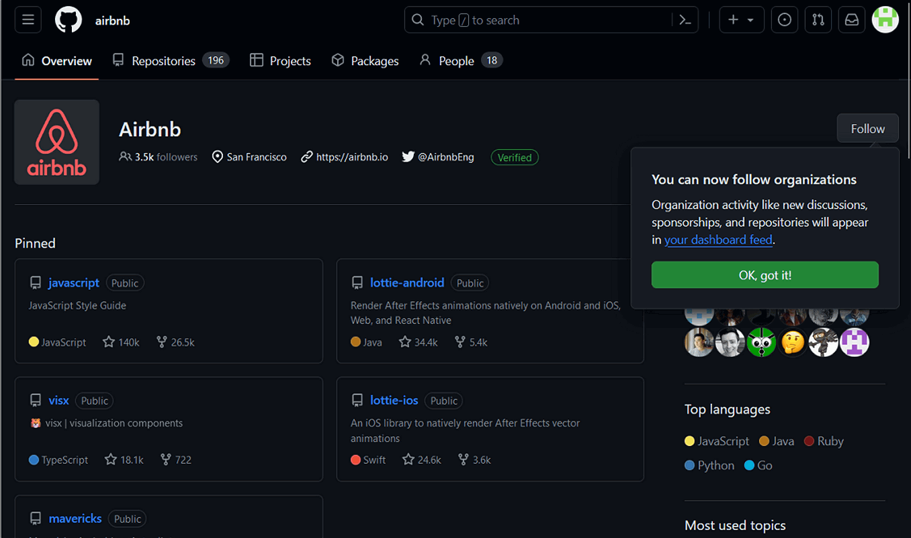
This is simply a list of GitHub projects. Typically, these are stored in a default branch named main or master. The GitHub web address looks like this:
https://github.com/username
At this address, you can only view and download files.
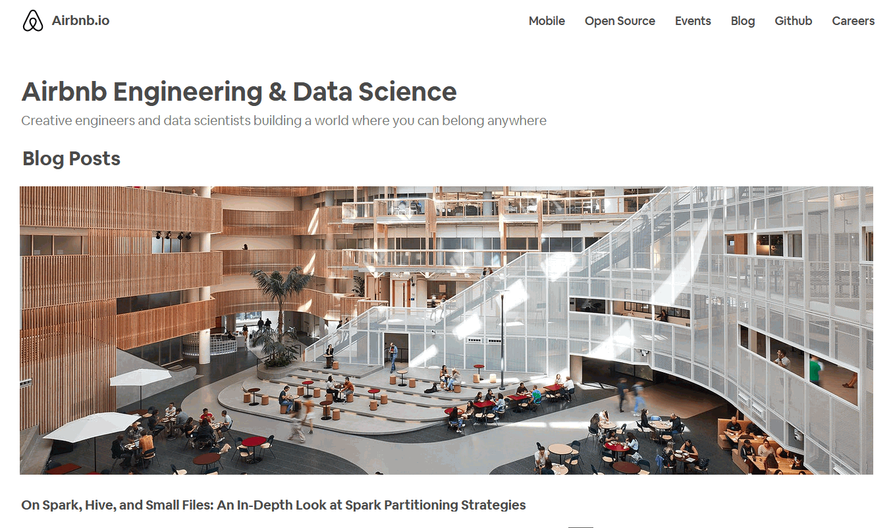
In this second example, you can view web pages along with their related images and other files.
GitHub can make this possible with a special branch named gh-pages. The GitHub Pages web address looks like this:
https://username.github.io
In the rest of this Tutorial you will create a GitHub Pages repository to host your web pages.
Using GitHub to host your web pages
To host web pages on your GitHub account, you need to create what is called a ‘repository’ with the same Repository Name as your GitHub Username.
Repositories on GitHub are commonly referred to as ‘repos’.
Follow the steps below to set up this repository.
- If you are not signed in to your GitHub account, sign in now.
- If your GitHub Dashboard screen is not currently displayed, click the Octocat icon at the top-left of the screen to display it.
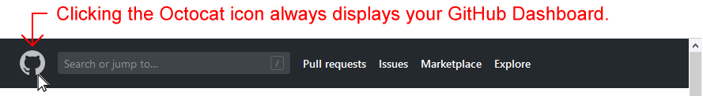
TIP: If ever you find yourself ‘lost’ when using the various GitHub screens, clicking the Octocat icon always brings you back to your GitHub Dashboard. - On your GitHub Dashboard, near the top-left of the screen, click the New button.
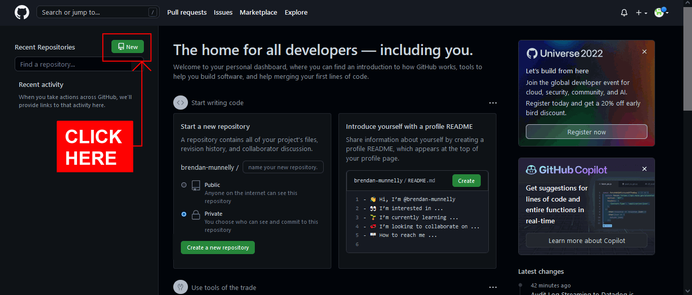
- GitHub now displays the Create a new repository screen. At the top of this screen, you can see your chosen GitHub Username is displayed in the Owner field.
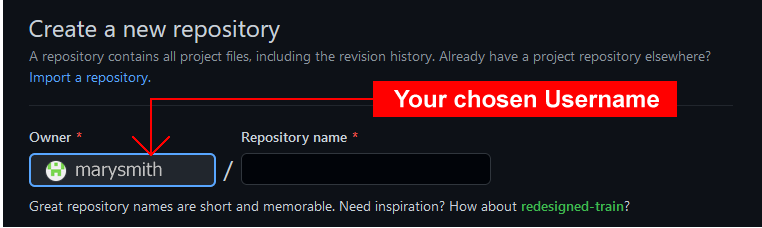
- At the right of the Owner field, in the field called Repository name, enter your chosen Username, followed by .github.io.
You must enter these EXACTLY. Here is one example.
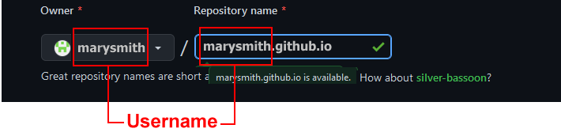
And here are some more examples.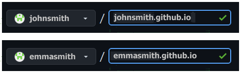
- Next, enter some text in the Description field, as shown in the example below.
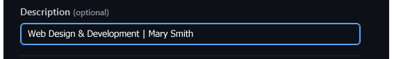
- Accept the default value of Public so that others will be able to view your web pages.
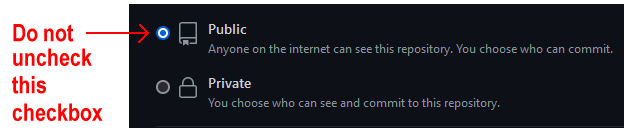
- Select the Add README checkbox below.
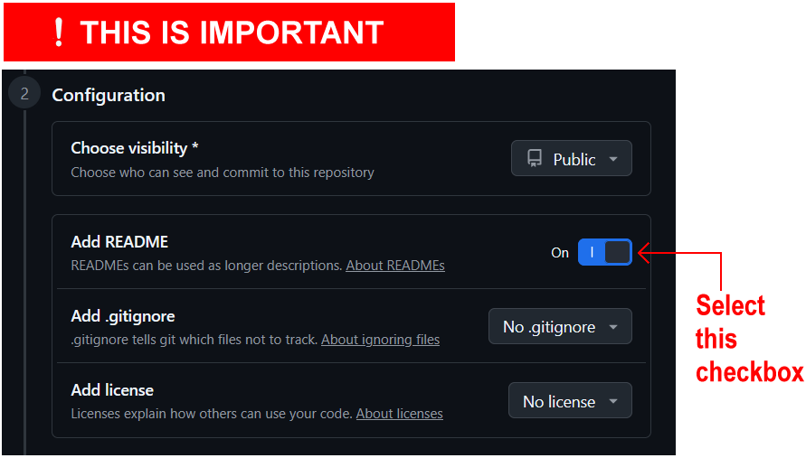
This will display your entered Description as ‘placeholder’ text on your GitHub website in a file named README.md. It also simplifies the remaining steps in creating your new repository. - Finally, click the Create repository button at the bottom of the screen.
GitHub now displays details of the repository you have created. See the example below.
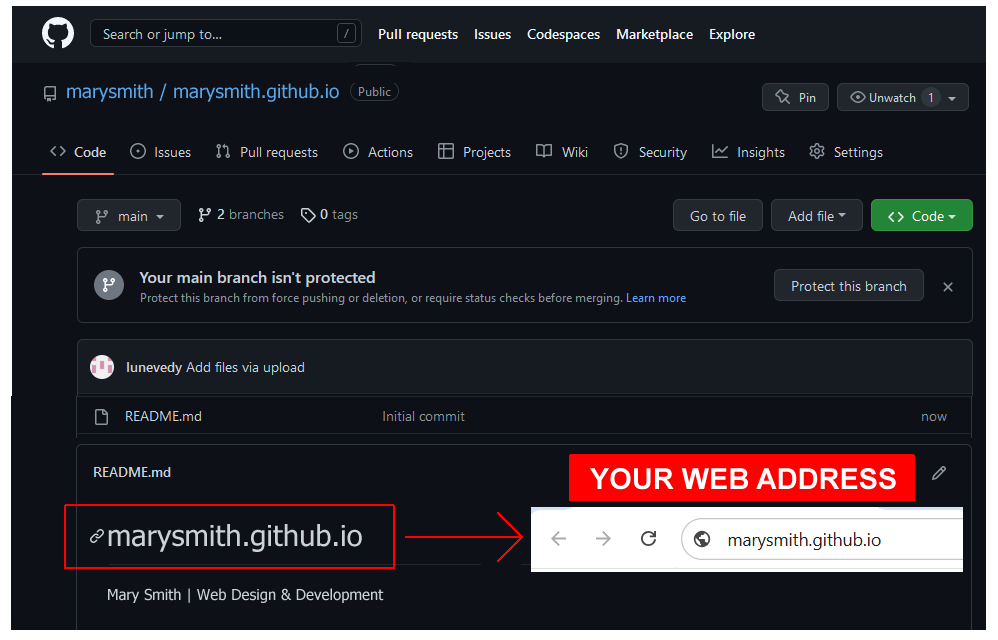
If you click the GitHub ‘Octocat’ logo at the top-left of the repository details screen, you are returned to your GitHub Dashboard.
There you can see your new repository listed in the column on the left. Clicking the repository name will bring you to the screen containing details of that repository.
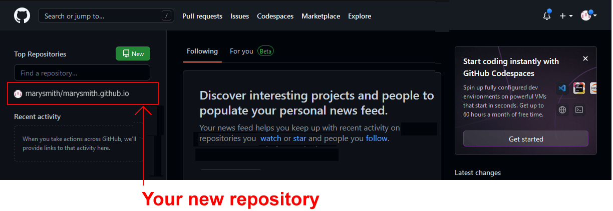
To verify that your GitHub account is working correctly:
- Open a new tab or window in your web browser.
- In the web address bar, enter the address of your GitHub website – such as marysmith.github.io.
You should now see a web page similar to the following.
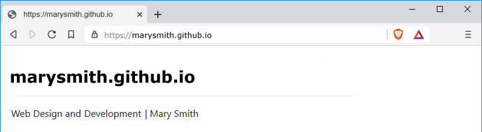
Note that updates to GitHub do not always happen instantly. It may take several minutes for a new web page to appear or an existing one to update.
Note also that there is no 'www' at the beginning of a GitHub web address. See the examples below.
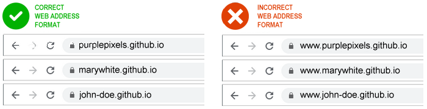